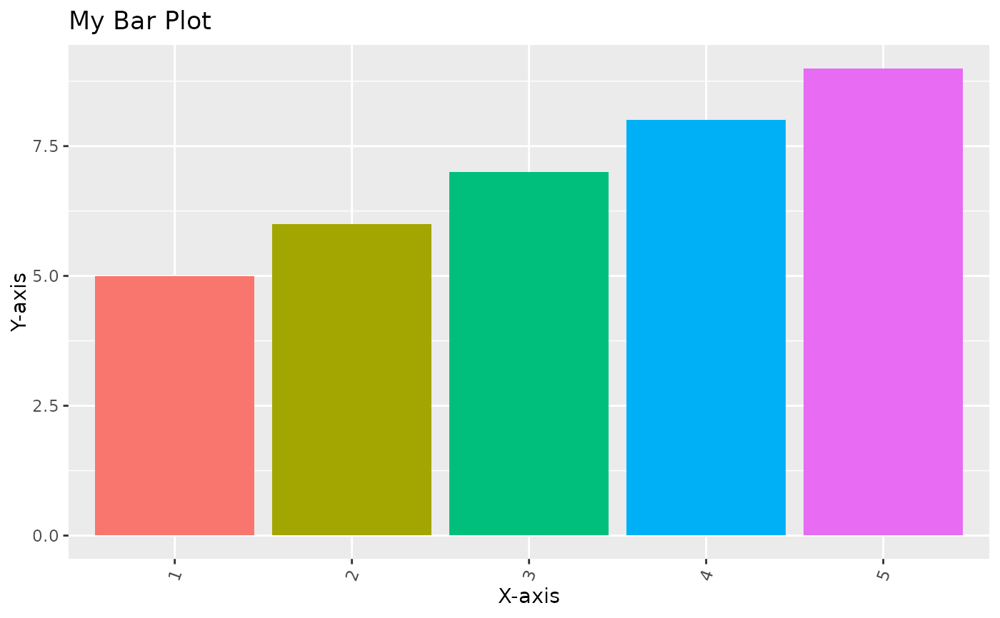

Creates a bar plot with a given data, x, y and fill and title/labels you want
Arguments
- data
A data frame
- x
A variable from the data param that you want to have on the x-axis
- y
A variable from the data param that you want to have on the y-axis
- fill
The variable you the bars to fill to
- title
A title for you plot
- xlab
A label for your x-axis
- ylab
A label for you y-axis
- xlabels
Labels for the variables on your x-axis
Examples
data_frame <- data.frame(x = c(1,2,3,4,5), y = c(5,6,7,8,9))
make_bar(data_frame, "x", "y", "x", "My Bar Plot", "X-axis",
"Y-axis", xlabels = c("1", "2","3", "4", "5"))
